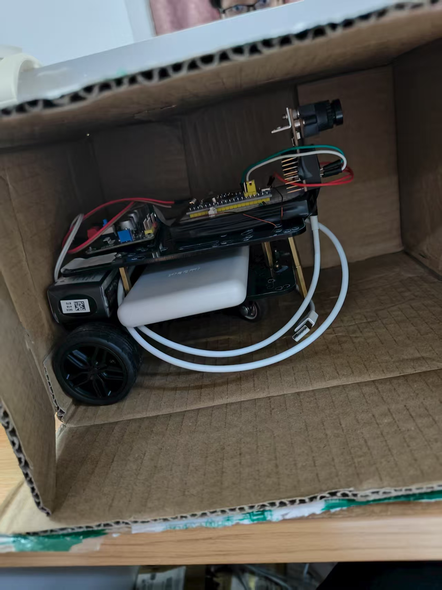
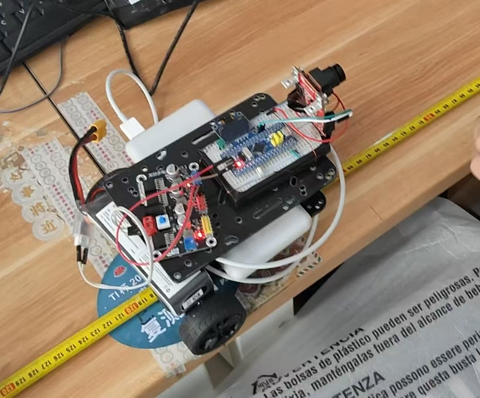

01
国家级大学生创新训练项目 · 2024—2025
易购小车 购物随行小伴侣
项目申报书明确记录我的角色为负责人，分工为程序编写。项目方案围绕 STM32、OpenMV、UWB、传感器和显示交互展开，目标包含商品识别、称重计价、自动跟随与避障；网页只把这些写作项目方案内容，不表述为已完成的商业产品。
材料确认负责人程序编写
PROJECT PORTFOLIO / 2024—2026
我是李张铂垚，通信工程本科生。这里记录我在嵌入式硬件、机器视觉、通信设备和数据监测方向做过的项目。
00 / APPROACH
从硬件选型、电路搭建和焊接，到程序编写、信号调试、通信联调与故障排查，我倾向于把问题拆到可以测量，再用结果验证改动是否有效。
SELECTED WORK
国家级大学生创新训练项目 · 2024—2025
项目申报书明确记录我的角色为负责人，分工为程序编写。项目方案围绕 STM32、OpenMV、UWB、传感器和显示交互展开，目标包含商品识别、称重计价、自动跟随与避障；网页只把这些写作项目方案内容，不表述为已完成的商业产品。
中国大学生电子设计大赛 · C题 · 2025
OpenMV 负责图像采集、目标识别和特征提取，STM32 负责数据解析、标定计算、OLED 显示与系统控制。代码材料包含 OpenMV Python 脚本和 STM32 外设工程，报告还记录了 UART、I2C、按键和功耗监测设计。
中国机器人及人工智能大赛项目
项目研究报告和 PPT 给出了完整系统链路：训练卷积神经网络，将模型导入 OpenMV；识别结果通过串口发送到单片机；电子秤数据经过 ADC 处理，最终完成商品、重量、价格显示和语音播报。
国家级大学生创新训练项目方案
方案 PPT 围绕 TMR 电流与波形采集、低功耗 BLE 传输、5G 中继和智慧化展示系统展开，关注传感器端采集、通信链路和故障定位的组合设计。
通信课程设计 · SOM
课程设计文档记录了 20×20 神经元网格、5 维用电特征、归一化、学习率与邻域半径衰减、重构误差和 95% 分位数动态阈值。数据文件包含用户 ID、日均用电量、夜间用电占比、工休差异率、峰谷比、波动系数和标签。
学院中规模 PCB 培训 · 实践教学
面向学院同学开展中规模 PCB 实践培训，覆盖原理图阅读、元器件选型、PCB 布局布线、焊接装配、万用表与示波器基础测量，以及从设计文件到实物验证的完整流程。
机器人系统实践 · 嵌入式硬件
围绕机器人和智能设备的控制链路，理解主控、传感器、执行器、串口通信和电源供给之间的协同关系，把单个模块连接成可调试、可验证的系统。
计算机设计类竞赛 / 软件作品
围绕智能监测、预警和数据展示类软件作品，参与需求梳理、功能实现、数据处理和展示材料整理，把传感器或业务数据组织成可理解、可交互的应用结果。


TECHNICAL EVIDENCE
原始材料中的报告、PPT 和代码不会整包公开，但会被整理成招聘者能快速读懂的技术证据。
if (RxState == 0 && RxData == 0xFF) {
RxState = 1;
pRxPacket = 0;
}
Serial_RxPacket[pRxPacket++] = RxData;
if (RxData == 0xFE) {
Serial_RxFlag = 1;
}来自电赛 STM32 工程的串口接收逻辑：帧头、数据区和帧尾组成定长数据包。
智慧无人称重计价系统
智能监测与预警平台
藏汉双语智能导盲杖系统
电力系统监测与预警平台
基于 LSTM-CNN 混合模型的物联网终端设备安全识别系统
飞牧智巡智能监控系统
HOW I WORK
STM32、C/C++、OpenMV，关注外设通信、数据处理和设备端交互。
电路搭建、焊接、传感器集成、TCP/IP、BLE/5G 方案理解。
目标检测、阈值与 ROI、校准、多帧稳定，以及异常数据监测。
从信号、接口、线路布局到整机联调，记录问题并验证修复结果。
RESULTS & RECORDS
作品集中的数字会注明来源：本人项目结果、报告测试结果和方案材料指标分别标记，避免把团队成果或设计目标误写成个人实测。
中国大学生电子设计大赛 · 四川赛区三等奖
CRAIC 中国人工智能大赛 · 省级二等奖
蓝桥杯软件设计大赛 · 省级三等奖